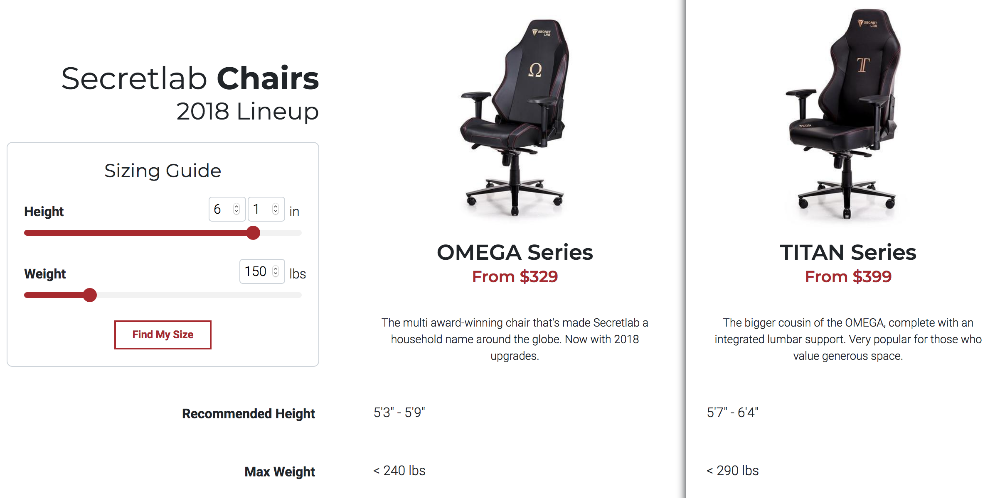
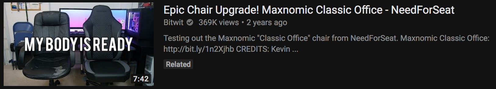
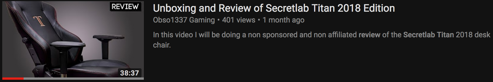
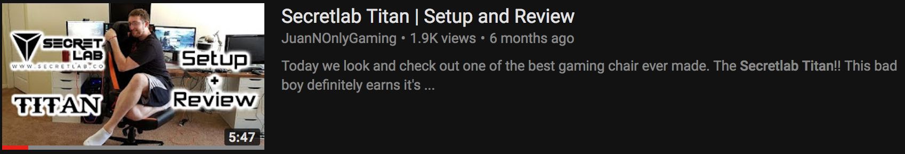

Looking for some desk chairs. Found out pretty quickly that if you search for 'office chair reviews' you get some crappy how-to videos like this that don't help at all.
(Don't watch the whole video... unless you want to waste the precious time)
As if showing you how to use the features on different chairs constitutes a Top 10 chairs video.
And then I look for gaming chairs and get this instead:
What a difference.
Chairs listed in this video:
Deerhunter gaming chair
Nothing special, nothing to write home about. You can feel the frame when you squeeze the chair. That's all he has to say about this one.
OPseat Master series
Very similar to the Deerhunter, it might be made in the same factory or use the same parts, but it has better padding. It's one of his favorite for price/performance due to color options and comfort.
OPseat Grandmaster series
Wider seat base and for taller people than the Master Series. The chair has a breathable mesh (don't spill on it).
Tesoro Zone Balance
Classy aesthetics. The chair has thicker padding than the above, so it gives a lot of comfort. Also one of the very best price/performance chair at $229.
Anda Seat
His least favorite because it's hard as a rock. You may not want to be stuck between this and a hard place. Pass on it unless you sleep on the floor or a really hard mattress.
Secretlab Omega 2018
A great reason why you should not buy the Anda Seat. It's as good as it gets for its price point. Lumbad pillow made of memory foam. Suede head pillow. PU leather. Padding incredible. Ergonomics great. The seat hugs you. The color options are pretty good. Brainbean uses this as his daily driver, and would recommend it over all chairs except one.
Noblechairs Epic Series
Everything is top notch. Nice suede side accents. Pillows feel like suede too. It takes a while to break in as the padding comes hard out of the box. He thinks it's slightly less comfortable than the Secretlab chair.
LF Gaming Stealth Edition
As premium an experience you can get with a gaming chair. Thermoguard foam that pulls heat away from your body. Nice quality, soft, durable, and easy-to-clean fabric. High quality memory foam that covers the entire chair, including the armrests. Built in head pillow and lumbar cushions. I just wonder why, if this chair is the best, he uses the Secretlab chair as his daily driver.
If you want to save money, Brainbean suggests to get the OPseat Master Series because general comfort is "not bad", although he would go with the Tesoro Zone Balance.
If you want to save less money, go with the Secretlab chair over the Noblechairs chair because it takes less time to break in, and you'll get comfortable in it quicker.
Overall, Secretlab's Omega 2018 is the best chair that he's used this year.
Here are some things to consider before buying a gaming chair:
So as you can see, the raaaabbit hole goes deep with chairs as well, so this post has potential to be quite long.
The seven things to think about are:
The biggest selling point of gaming chairs are their design.
The crappy-looking office chairs
Height and weight are the most important considerations
Don't get one that's outside of your range. Check the spec sheet.
A lot of gaming chairs sold by different companies are made by the same manufacturer
The difference is the level of support (care) you'll get. You'll have a better experience if you need to interact with a more reputable company.
Consider the adjustment features
Ok
The lumbar support pillows can be hit or miss
Sometimes the pillow just falls down if the pillow isn't affixed to the chair. There are some that the lumbar support is built into the chair.
It's not always possible to test a chair before purchase
It's just like buying anything online. Like, exactly the same. You gotta look at the pictures and watch other people sitting on it on YouTube to make your decision.
Give your new chair some time before you hate it
Ok, so if you go from sitting shittily to sitting properly, your body is going to ache for a while, and the chair has nothing to do with your past mistakes. A good way to know what the right posture is is to take note of how you sit while you are pooping.
Basically, you'll only know whether the chair is right for you after having sat in it for a while.
Next we have a babe telling us how to set up an ergonomic workstation:
It did not have much to do with the chair, but it was helpful to know approximately where things should be in relation to other things.
The three things you should consider with the chair:
Good lumbar support
There should be a little space between the edge of your seat and the back of your knees
Make sure your feet don't dangle. But if they do, don't adjust the height of your chair.
Another video of a guy telling us all the things (five things, two of which we already know) we are doing wrong sitting at our desks was equally helpful, because knowing what not to do is just as helpful as knowing what to do. Often, you need to know both to be able to do something properly.
Here's what David says to not do:
Don't sit up perfectly straight
It's temping to do because of the script we have in our heads that a straight back is "ergonomic," but it puts a lot of unnecessary straing on your spine. So, lean back.
Don't set your chair height for your feet
Set it for your keyboard and mouse. These peripherals should be a few inches above your legs. If your table is non-adjustable and too high like mine, that means you should be using an under-the-desk keyboard tray. If your feet are still hanging, get a thing to rest them on.
Don't use desks with built-in drawers
How else would you keep your peripherals just a few inches above your legs?
Don't use wrist rests
The pressure that it puts on your wrists restricts blood flow.
Standing is not better than sitting
Don't be fooled by those "ergonomic specialists" that come by your desk at your corporate job who tell you that working your corporate job won't suck the soul out of you if you just get a standing desk.
The problem with racing/gaming chairs:
Well, I gotta say, I do really like how cool gaming chairs look, and so far have been basing my desire to buy one based on the look. It's not like I have gone out and sat on a bunch of (any) chairs to get a feel for them.
The generalized problems:
Lack of adjustments -
Most racing/gaming chairs don't have seat pan depth adjustment or have good options for lumbar support. Although this is also a problem with other chairs... so... maybe this is not as big a problem.
The bucket seat design
makes it awkward to cross your legs on the seat.
The price
reflects that you're paying for a "premium gaming" product that moreso looks better than actually is better than another chair available at the same price.
This video wasn't enough to change my mind about getting a cool looking gaming chair. I rarely sit cross legged, and the lack of adjustment issue seems overcome by the more elite gaming chairs, such as this chair from Clutch Chairz:
Some insights from this review:
You can win a free video game by subscribing, commenting, liking, and following Clutch on Instagram!
Clutch loves subs
Clutch Chairz provides some of the most elite gaming chairs on the planet
Clutch hasn't worked out in four days
The chair is huge, has nice colors, and Oooooo!
Clutch needs good lumbar support, you know
Recline feature: Ooooohhhh!
Cameraman knows more about the chair than Clutch
Reclining too much causes a snapping sound, but the chair is still good
I should get my own Clutch Chairz using promo code 'ClutchJoyner' to get 15% off.
Was this video supposed to convince me to buy a Clutch Chairz? If Clutch Chairz are really good, this guy kinda did a disservice to them because he didn't explain why they were good, why I should get one, or what some of the cons are. Spinning around in the chair saying "Ooooohhhh" is not very convincing.
Man, I should get into making chair reviews. This shitty review video has nearly 10,000 views.
Here's a better one, just to be fair to Clutch Chairz:
Secretlab Titan
The chair that has caught my attention enough to investigate further is Secretlab's Titan chair, and it's probably because BrainBean spoke so highly of it in his review of eight different chairs that we saw near the top of this post.
He was talking about the Secretlab's Omega series, but at 6'1" and 150 lbs, Secretlab would recommend the Titan for me.

One would think that two chairs from the same company would be of similar build quality and comfort, so we could say that BrainBean was just as well talking about the Titan in his video.
Right?
YouTube is amazing! I found a comparison video between the Omega and Titan
Main differences:
Price - The Omega is less expensive, at $329, while the Titan is $399. Both offer financing through Affirm.
Size and dimensions - The Titan is built for people that are taller and heavier than the Omega. The Omega is recommended for people up to 175lbs, which is me. But, since I plan to get heavier, the Tital will be a better fit for me. Check out the specs for each of the chairs to find the right chair for you.
Comfort - The biggest difference is the lumbar support. The Omega comes with a pillow, while the Titan has built-in lumbar support. I would much rather have a chair with built-in lumbar support because the pillow will fall down when leaning forward.
A super helpful video, and exactly what I was looking for.
Here's that same guy unboxing the Titan:
Then he sat in it for a week, 7-8 hours a day, and did this review. You can tell because he is wearing different clothes.
What I appreciate about his review is that he tells you upfront about the chair he was sitting in before so that you can adjust your expectations accordingly. If he had been sitting in a crappy chair, the feeling of sitting in a $400 chair would have been overwhelmingly positive and the review would reflect that. On the other hand, if he was coming from a TOTL (top-of-the-line) chair, this one would not be as great.
The chair that he was sitting in prior to the Titan was this one. Comparatively, the Titan is a much better sitting experience.
Things that he likes about the Titan:
Comfort - the chair is firm, but it is a supportive firm rather than an uncomfortable firm.
Adjustable lumbar support - He's mainly kept the lumbar support setting at full resistance, but did adjust it down when his body got a little stiff from sitting in an unfamiliar (better) position.
Reclining seat - it's pretty comfortable, especially if you want to lay back a bit when watching something or doing repetitive tasks. Recommended that you get something to rest your feet on while reclining. The addition of the pillow works well to give your head something to rest upon.
Things that he doesn't like:
The bucket seat because he likes to sit legs wide. The raised edges get in the way of the hamstring location. Supposedly, it is better to sit with your legs closer together, so this may be a blessing in disguise to correct a negative sitting habit.
The lack of design choices and color schemes - He'd like to see an all-black version of the chair. Idk.
Since a week isn't a very long time to have been sitting in a chair, and I plan on sitting in the chair I get for a much longer time, I wanted to see if I could find someone who has done a review after a longer period of time.
I found Crue Steele who's been sitting in the chair for over a year. He meant to do a one-week review, but got busy. I think the one-year review is just fine.
Highlights from the video:
The chair is so comfortable enough that he's fallen asleep in it a couple of times.
The only issue that he had came 8 months after use and it wasn't even really an issue: one of the bolts that connects the chair to the base came undone. He put it back. Everything perfectly fine.
Getting good sitting posture is three things: chair, desk, and monitor.
I guess that means you'll be seeing desk research and monitor research posts from me soon.
The armrests were hard in the beginning, but they did give and become softer after a couple months of use.
He went for the Titan because it was different and unique. He didn't want DX. He tries not to follow the crowd. That's why he grows his hair long.
Well, it looks like this is the right chair for me. LWS is all about observing what most people are doing, doing my own research and testing, then explaining why you don't need it, like I did with fluoride toothpaste.
The only bad thing he has to report is that someone apparenly had a negative customer service experince. He personally has not needed to reach out, it's just something that he heard.
Another review from Goshuki who's been sitting in it for six months, who says it's the best chair that he's ever put his butt in:
Best chair he's ever used, but there are some downsides that he found with it:
The arm pads on the chair are kind of rough so he got some elbow pad rests from Amazon.
A weird creaking noise when he leans back in the chair. Not a big deal, but it does get on his nerves. WD-40 might help with that.
That's it actually.
Here's another review! They just keep coming and coming and coming and coming...
I like this guy's style:
Once again, this chair is a big improvement over the chair that iPhonedo had been sitting in before.
A super nice thing, and this is sort of a a tell-tale sign that Secretlab really puts a lot of thought into their chairs is that the armrests don't go up when you lean back, meaning that they won't hit the underside of the table.
Even the $1200 chair I use at work has this problem. It bugs the hell out of me that I'm restricted from reclining when sitting close to my desk because the armrests interface with the table. So for a $400 gaming chair - that everyone so far has said is one of the most comfortable chairs they have sat in - to have this feature is really quite impressive.
Hm, but wait a minute. iPhonedo says that Secretlab doesn't This entire time I was thinking I was doing research into a gaming chair, but it turns out that Secretlab doesn't call their products gaming chairs. So I guess I've just been researching ...
...
a regular chair
:o
The number of positive reviews for this chair are over nine thousand. I wonder, can I find anyone saying that you shouldn't get it because it sucks, it's uncomfortable, or any other reasons?
At this point, after having already spent several hours on research and found a chair that I know I'll be content with (it's going to be better than the no chair I have now), I would have just ordered it.
But, since this is LWS, we want to be skeptical when the top reviews overwhelmingly positively recommend something, and look further.
A conflicting viewpoint is a friend, not something to run away from.
... searching ...
Hmm...
"This chair is a godsend"
"I have presales codes for you"
Nope, not there.
Maybe here:
"Solid 10/10"
"This is actually the most beautiful chair that I've ever sat in"
OK, I gotta confess that I didn't really click on that video to see a chair review. There were other things that drew me in. Unfortunately, the video was blurred for the main chunk of the action.
This next result confused me for about three seconds because it's not a review on the Secretlab titan, even though I was specifically searching for 'secretlab titan'. Paid search results hijacking at work maybe?

"My mother once mistook me for Stephen Hawkins"
"Some of the small washers came bent out of shape"
I had to watch the video a couple of times to distinguish the jokes from the actual messaging.
So this is obviously not a review for the Titan, but since it popped up, I'll take a look at it in a section below.
This one is quite long. Useful indicator that assembly by one person takes about 20 minutes. The review starts after he flips it.

"I don't like [the pillow] at all"
"Solid chair for the price"
"9/10"
Mostly positive review with some criticisms.
The instruction manual could be better
The head pillow will slide up since the straps don't have anywhere to rest
Armrests are hard and polished. They could use some cushioning
Oh baby, on the money with this one. YOLO Boy's got some really negative things to say about the Titan.
It's too big - If you're his height, about 180cm, the bottom of your knee will always feel uncomfortable.
It sounds like he got the chair that was too big. Looking at the Omega-Titan comparison screenshot above, YOLO Boy probably should have gotten the Omega because he's within the suggested height range for it, but just within the low range of the Titan.
The lumbar support is lacking - he's been sitting in it for weeks, or more than one month, but he still feels uncomfortable sitting in it. He reached out to Secretlab and they said that the chair is designed to force you into good posture and it'll take a while to get used to it, which is sort of a crappy response. It hasn't helped him solve his back problem.
I wonder if this is the one negative customer service experience that Crue Steele was talking about
You'll need AC on all the time - Not suitable for people in warmer climates. He's in Singapore and it gets too hot to sit in for long periods of time.
It's too expensive - You can probably get a better chair for the same price. It's expensive because the design is sleek and the marketing lures you into thinking that it's a fantastic chair.
This chair is a want, not a need. It's not about comfort, but looking good in your room. You should only get it if you want a cool-looking chair and have the extra money to spend on it, but don't expect it to be as great as everyone says it is.
YOLO Boy has another video on the chair that he published before he sat on it for weeks:
Same issue that he brought up later with the lumbar support: it's not good enough. He suggests that you get the lumbar pillow that the Omega comes with if you order the Titan. A good idea if I find that the lumbar support isn't good enough.
One thing that I'll note here, which has nothing to do with his ability to objectively review the chair, is that he did not assemble the chair himself. Two people did it for him.
All of the other reviewers so who have given BUY ratings have assembled the chair themselves. YOLO Boy, who did not self-assemble, is the only one who's given a DON'T BUY rating. There's something for a PhD to investigate here:
Does putting in work to build your chair make you more likely to give it a positive review?
I'm just glad I found a negative review.
Man, this guy is sooOooOo excited, like he got a chair for Christmas. You can tell by how he's hugging the chair in the video thumbnail.

"I have no doubt after seeing all these reviews that this thing is going to be fan-freaking tastic"
"This is probably the best chair I've ever sat in | on the market"
Yup, right there with you buddy.
Not really a review, but the view is nice.
"I like it"
"They also have the Titan which is made for people up to 200cm tall"
Quite a few of these around. Not sure what the use is, but they often do have over ten thousand reviews.
Holy sweet and tender Baby Jesus. There's a whole playlist about this chair, with 50 videos.
Wow
It seems like this chair is gaining something like a cult following, and everyone's in it.
Except YOLO Boy. He's not happy with it.
All right. I'm getting a bit fatigued doing so much research into the Titan, so I'm gonna wrap it up with two final reviews.
Kludgy Player did a reveiew between the Titan and the Noblechairs Epic (which we saw Brainbean showcasing above as well). Guess which chair was the winner?
"I once bought a terrible chair"
"I'm just going to go ahead and say it, this is the winner for me"
Surprised?
At this point, me neither.
I really liked the all black design that Secretlab has listed as a new color on their site, but I didn't find any reviews or closeup shots of it. This last video gives us just that.
We also got a glimpse into how the customer service works. It does, just as it should.
Sorry, I lied. There's one more important thing that needs to be considered.
Speed
Well, that just about answers all remaining questions I had.
UPDATE
I checked in on the reviews on their website. Check this out:
Ok, I feel like I've gotten a really good feel for the Secretlab Titan chair, but I feel like my narrow focus of looking for Titan reviews is limiting my exposure to other chairs that may be better. The Titan/Omega has come out on top in the comparison videos that I've seen (two of them above), except for in
one review comparing it to the DXRacer, so at this point I'd say it's safe to say that it's a great chair.
But why not look at a few others?
Maxnomic Classic Chair by
This is a chair that came up high up in the search results for 'secretlab titan' so I decided to give it a deeper look.
Bitwit gave it a good review and a BUY rating if you can afford the investment. But let's see what others have to say.
SixteenThirtyTwo's review came up second, right after Bitwit's when searching 'Maxnomic classic':
Overall, he gave the chair his recommended rating, but did bring up a few points worth noting.
The chair has thick, firm high density foam, which makes it very supportive.
Good about the armrests: (1) Plenty of height; (2) fore and aft adjustment.
Bad about the armrests: (1) Too much play; (2) too little padding for his liking; (3) don't rotate; (4) side-to-side adjustment is fiddly and offers little range.
The reclining adjustment goes far back enough that you can sleep in the thing.
While the headrest pillow ruins the look of the chair a little, it is very comfortable
The lumbar support pillow is too hard and thick. It also falls down when you adjust in your seat.
He bought the chair with his own money so you know it's legit.
I wonder if he knows about the Titan series chair from Secretlab. It would actually solve most of his pain points with the chair, and it's less expensive.
Now we have an unboxing and review from SLAPTrain while he's playing Forza 5.
...
He's very impressed with the company and here's why:
Everything screamed quality
Everything was wrapped and nice and thick. The instruction manual was in a protective sleeve, printed in color on glossy paper. Even the receipt paper was glossy. They have their logo on the packaging. Every package is inspected twice before shipping (compare to companies that just throw things in the box and don't really care if everything gets in there).
My first impression of this review is that this was not an honest review. Who bases the quality of a chair on the quality of the instruction manual and receipt paper?
Mint
The chair will take some time to break in, but when you do, it's mint.
Height
At 6'2", he hasn't found a chair that is high enough that his feet dangle. (Not exactly a positive in my mind. I want a chair that lets you put your feet on the floor)
No negatives
If he ever needs another chair, he's going straight to NEEDforSEAT, man.
Great wheels
The wheels just glided on carpet. It's like ICE on the carpet, man.
This guy's comment sums up my sentiments exactly:
Yep
Yep.
This is looking like it's going to be a short deep dive.
This is the third video result. Not exactly what you'd want if you were NEEDforSEAT.
It's especially bad when cac2244 starts the video saying that he's an average guy, not a pro YouTuber, bought the chair with his own money, and wanted to make a review to "help people make the best possible technology-buying decisions with their hard earned money".
Read between the lines there. What is he really doing?
He made the decision to buy the chair after having watched several positive videos about the chair (Bitwit? SLAPTrain?). He did not find many negative reviews.
Main points:
It's hard like a rock
Compared to the hard wooden chairs he used to sit on in high school, the Maxnomic Classic is more uncomfortable. It's almost as hard as a plank of plywood.
No padding in the back of the seat cushion
It's exactly where the tailbone lands, so you get discomfort in that part of your butt. You don't notice it until you've sat in the chair for a while.
It's too tall
His feet dangle. There are different sized cylinders that you can buy, but it was not clear in the check-out process how to specify what cylinder to order with the chair.
Isn't it interesting that SLAPTrain talked about this as a feature?
Customer service is equally great and bad
The customer service rep told him he couldn't provide him a replacement, but would have to sell it to him at cost plus shipping. He sold him a shorter cylinder from another chair series, guaranteeing that it would fit. It was different.
Lumbar support
He's sitting in the chair right now and he's in pain. His back problems have gotten worse since sitting in the chair. He's planning to go to IKEA to buy a replacement.
Grease magnet
It just attracts all the grease on people's hands when touched.
Great packaging and nice receipt
Great customer. He gives recommendations for each of the problems he encountered. I hope NEEDforSEAT reviews his video.
Ruh Roh.
Well, at least I didn't have to go digging for negative reviews like I did for the Titan.
Seems like people who pay for the chair don't like it as much as people who got it for free.